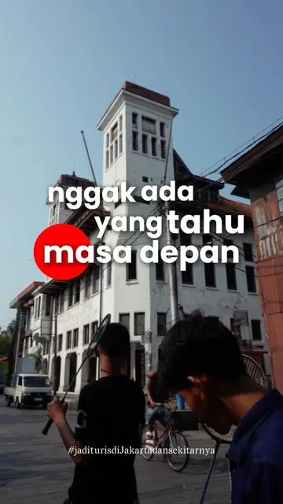

Jadwal dan kuota kursi
Admin buat jadwal sekali, misalnya Pecinan Glodok 20 kursi. Sisa kursi tampil langsung dan pendaftaran tutup sendiri saat penuh atau lewat pukul 21.00 H-1.
dulu: jadwal ditulis ulang di form tiap minggu
Peserta pilih rute, bayar commitment fee lewat QRIS, dapat tiket dan pengingat di WhatsApp. Tim Stroll Around cukup fokus memandu dan bercerita.

Kota Tua bareng Stroll Around ✓ Commitment fee lunas Pengingat H-1 terkirimPilih satu atau lebih rute · ± 2 jam per tur
Pecinan Glodok · Minggu 09.00
Bisa dari GoPay, OVO, DANA, ShopeePay, atau m-banking
Demo jalan sendiri, ketuk garis di atas layar buat pindah langkah
Kami telusuri jalur peserta dari bio Instagram sampai hari tur. Ada enam kali pindah aplikasi, dan hampir semua pekerjaan di baliknya dikerjakan tangan oleh admin.
Calon peserta lihat konten, klik link di bio.
belum tahu jadwal & sisa kursiTiga tombol: form, WhatsApp, dan rute.
satu klik lagi sebelum daftarCentang jadwal, isi nama dan nomor, setujui aturan.
tanpa kuota, satu form per orangBayar commitment fee Rp10.000 per rute.
admin cocokkan mutasi satu-satuPeserta dimasukkan ke grup untuk info lanjutan.
nomor disalin manualRute dan itinerary dibuka dari folder bersama.
berat di HP, gak muncul di GoogleKontennya sudah bikin orang pengin ikut. Tinggal disambung ke pendaftaran.Foto dari Instagram @stroll_aroundd. Klik untuk lihat postingannya.
Website Stroll Around sendiri yang terhubung ke QRIS, WhatsApp, dan dasbor tim. Peserta tidak perlu instal aplikasi apa pun.
Admin buat jadwal sekali, misalnya Pecinan Glodok 20 kursi. Sisa kursi tampil langsung dan pendaftaran tutup sendiri saat penuh atau lewat pukul 21.00 H-1.
dulu: jadwal ditulis ulang di form tiap minggu
Rp10.000 per rute dibayar saat daftar. Status lunas masuk otomatis, kursi baru terkunci setelah bayar. Bisa daftar beberapa rute dan teman sekaligus.
dulu: transfer lalu dicocokkan dengan mutasi
Tiket dan link grup terkirim begitu bayar. Pengingat H-1 pukul 18.00 berisi titik kumpul dan peta. Kabar perubahan jadwal sampai ke semua peserta dengan satu tombol.
dulu: pesan dikirim dan disalin manual
16 rute dari PDF Drive jadi halaman sendiri: cerita singkat, titik yang dilewati, peta, foto, dan tombol daftar jadwal terdekat. Ringan di HP dan bisa muncul di Google.
dulu: PDF di folder bersama
Pemandu buka HP, scan tiket peserta atau centang nama. Langsung kelihatan siapa yang belum datang, dan nomornya bisa dihubungi dari situ.
dulu: absen dari daftar di grup
Setelah tur, peserta dapat pesan terima kasih berisi QRIS untuk bayar sesuai kepuasan, satu pertanyaan ulasan, dan rekomendasi rute berikutnya.
dulu: hanya tunai di lokasi
Peserta per tur, kehadiran, yang tidak datang, tip terkumpul, rute paling diminati, dan peserta setia. Bisa diunduh ke Excel kapan saja.
dulu: spreadsheet hasil form
Form permintaan tur privat untuk kantor, sekolah, atau komunitas, lengkap dengan penawaran harga. Versi bahasa Inggris untuk wisatawan mancanegara.
dulu: lewat chat WhatsApp
Kartu cap digital. Setiap rute yang diikuti dapat satu cap, misalnya 5 cap ditukar merchandise. Alasan yang jelas untuk ikut lagi bulan depan.
dulu: belum ada
Contoh untuk satu peserta yang ikut tur Pecinan Glodok hari Minggu.
Satu link, pilih rute, lihat sisa kursi, isi nama. Kurang dari satu menit.
Scan QRIS Rp10.000. Tiket dan link grup langsung masuk WhatsApp.
Titik kumpul, peta, perkiraan cuaca, dan kontak pemandu.
Pemandu scan tiket. Peserta yang telat dapat pesan otomatis.
QRIS pay-as-you-love, satu pertanyaan ulasan, dan cap Stroll Pass.
Nama rute di bawah diambil dari folder panduan Stroll Around. Setiap perangko nanti jadi halaman sendiri dengan jadwal terdekat dan tombol daftar.
Perangko Kota Tua sudah pakai foto dari Instagram Stroll Around. Yang lain masih ilustrasi. Di versi jadi, semua rute pakai foto dokumentasi tur sendiri, dan isi halamannya disusun dari PDF panduan yang sudah ada.
Dibuka dari HP atau laptop. Angka di bawah hanya contoh tampilan.
| Urusan | Sekarang | Dengan sistem |
|---|---|---|
| Buka jadwal | Edit pilihan di Google Form tiap minggu, posting ulang | Isi jadwal di dasbor, otomatis tampil di web dan bio |
| Batas peserta | Pantau jumlah respons, tutup form manual | Kuota per tur, tutup sendiri saat penuh atau lewat batas waktu |
| Commitment fee | Cek mutasi, cocokkan nama, tandai di spreadsheet | QRIS terverifikasi otomatis, kursi terkunci setelah lunas |
| Grup dan info | Salin nomor, undang ke grup, kirim info satu per satu | Link grup, tiket, dan pengingat H-1 terkirim sendiri |
| Absen | Panggil nama dari daftar | Scan tiket, yang belum datang langsung kelihatan |
| Pay-as-you-love | Tunai, sering terlewat kalau peserta tidak bawa uang | QRIS di pesan terima kasih, tercatat per tur |
| Peserta lama | Data tersebar di banyak form | Satu daftar peserta, riwayat rute, dan Stroll Pass |
Geser sesuai kondisi Stroll Around.
Bisa dipakai untuk riset rute baru, bikin konten, atau sekadar istirahat di akhir pekan.
Estimasi kasar: 1 bulan dihitung 4,3 minggu, 3 pesan otomatis per peserta (tiket, link grup, pengingat). Angka sebenarnya tergantung cara kerja tim.
Biaya pembuatan dibayar sekali. Biaya bulanan untuk server, domain, WhatsApp otomatis, dan perawatan.
Ganti Linktree dan Google Form dengan website sendiri.
Rp 3,5 jt sekali
+ Rp 150rb / bulan
Pendaftaran sampai check-in berjalan sendiri.
Rp 6,5 jt sekali
+ Rp 300rb / bulan
Untuk menambah pemasukan di luar open trip.
Rp 9,5 jt sekali
+ Rp 400rb / bulan
| Fitur | Rapi | Lancar | Tumbuh |
|---|---|---|---|
| Website | |||
| Website + domain .id | ✓ | ✓ | ✓ |
| 16 halaman rute + peta | ✓ | ✓ | ✓ |
| Versi bahasa Inggris | – | – | ✓ |
| Pendaftaran | |||
| Jadwal dan kuota kursi | ✓ | ✓ | ✓ |
| Daftar beberapa rute dan teman sekaligus | ✓ | ✓ | ✓ |
| Commitment fee QRIS otomatis | – | ✓ | ✓ |
| Form private trip | – | – | ✓ |
| Tiket, link grup, pengingat H-1 | – | ✓ | ✓ |
| Kabar perubahan jadwal massal | – | ✓ | ✓ |
| Pesan rute baru ke peserta lama | – | – | ✓ |
| Hari tur dan sesudahnya | |||
| Check-in scan tiket | – | ✓ | ✓ |
| QRIS pay-as-you-love + ulasan | – | ✓ | ✓ |
| Stroll Pass | – | – | ✓ |
| Tim | |||
| Unduh data peserta | ✓ | ✓ | ✓ |
| Dasbor dan laporan per tur | – | ✓ | ✓ |
| Akun admin dan pemandu | 1 | 5 | Tanpa batas |
| Waktu pengerjaan | 7 hari | 14 hari | 21 hari |
| Revisi setelah tayang | 1× | 2× | 3× |
Reels 9:16 animasi peta: garis rute berjalan dari titik ke titik, nama tempat, dan satu cerita singkat. Dibuat dengan kode, cocok untuk promosi jadwal minggu depan.
Respons Google Form sebelumnya dirapikan dan dimasukkan ke daftar peserta, supaya riwayat dan Stroll Pass langsung terisi.
Halaman rute tambahan setelah tayang, dari PDF atau catatan tim. Gratis kalau sudah ambil paket Tumbuh.
Contoh untuk paket Lancar. Tim Stroll Around cukup menyiapkan bahan dan mencoba.
Satu sesi 45 menit. Kirim PDF rute, foto, logo, dan aturan tur. Akun QRIS dan nomor WhatsApp bisnis disiapkan bersama.
Website, halaman rute, pendaftaran, dan dasbor. Progres bisa dilihat lewat link tiap 2–3 hari.
Tim daftar sebagai peserta, bayar Rp10.000, terima pesan, dan coba check-in. Revisi langsung dikerjakan.
Link bio diganti. Pelatihan singkat untuk admin dan pemandu. Tur akhir pekan pertama didampingi.
Ada yang belum terjawab? Tanya langsung lewat WhatsApp.
Tidak. Tur tetap gratis dengan commitment fee Rp10.000 yang dikembalikan jadi freebies atau donasi. Sistem hanya menambah pilihan QRIS untuk tip setelah tur, dan tunai di lokasi tetap bisa.
Tidak perlu. Peserta cukup buka link, isi nama dan nomor WhatsApp, lalu bayar. Tiket dikirim ke WhatsApp.
Masih. Link grup per tur dikirim otomatis setelah bayar, jadi admin tidak perlu memasukkan nomor satu per satu. Kalau nanti ingin tanpa grup, pengumuman bisa dikirim langsung ke peserta.
Langsung ke akun QRIS milik Stroll Around melalui penyedia pembayaran resmi. Dar Dev tidak memegang uangnya.
Admin ubah status tur di dasbor, semua peserta dapat pesan pembatalan atau jadwal pengganti sekaligus. Commitment fee bisa dipindah ke jadwal berikutnya.
Bisa, nomor 0859-5637-3064 didaftarkan sebagai WhatsApp Business resmi untuk pesan otomatis. Kami bantu prosesnya, dan chat dari peserta tetap bisa dibalas seperti biasa.
Stroll Around. Domain atas nama Stroll Around, data peserta bisa diunduh kapan saja, dan kalau berhenti langganan semua data diserahkan.
Bisa. Biaya yang sudah dibayar dihitung, jadi naik ke Lancar cukup bayar selisihnya.
Ngobrol 30 menit dulu, gratis. Kami tunjukkan demo yang berjalan dan sesuaikan paket dengan jadwal tur Stroll Around.